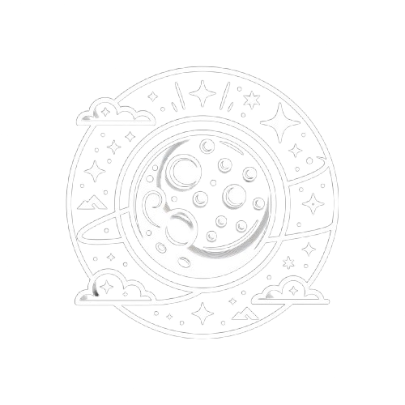
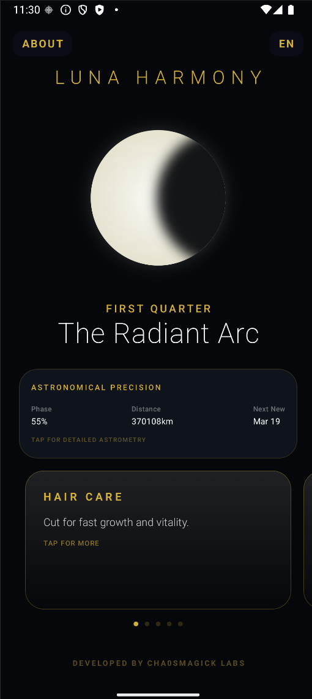
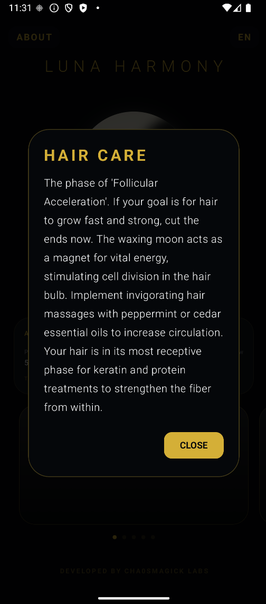
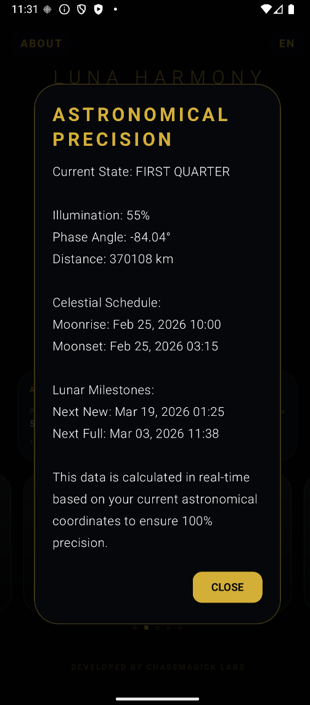

Lunar Phase Calculator
Track moon phases for magic, wellness, and biodynamic gardening with stunning real-time visuals.



What Is Lunar Phase Calculator? Your Complete Lunar Companion
The Lunar Phase Calculator is the only Android app that seamlessly integrates astronomical precision, biodynamic gardening, wellness timing, and lunar magic in one stunning, real-time visualization. Powered by Jetpack Compose, it delivers professional-grade lunar data with an immersive dark interface designed for practitioners, gardeners, and astronomers alike.
Key Features
- Real-Time Lunar Visualization: Watch the current moon phase animate with stunning Jetpack Compose graphics. Swipe between tabs for instant access to phase data, rise/set times, and distance metrics.
- Precision Astronomical Data: Track moonrise, moonset, Earth-Moon distance, and upcoming New Moon / Full Moon dates with millimeter accuracy. Professional-grade algorithms power every calculation.
- Wellness & Beauty Timing: Know the optimal lunar phases for haircuts, skincare treatments, detox programs, and nutrition planning. Align your self-care with cosmic rhythms.
- Biodynamic Gardening Calendar: Plant, transplant, prune, and harvest at the most favorable lunar moments. Healthier plants, higher yields, less effort — backed by generations of agricultural wisdom.
- Lunar Magic & Ritual Guide: Each phase carries distinct energetic properties. Access guided rituals for manifestation (New Moon), reflection (Full Moon), release (Waning), and intention-setting (Waxing).
Who Benefits From Lunar Phase Calculator?
- Witches & Magical Practitioners: Time rituals and spellwork to precise lunar phases for maximum energetic alignment.
- Biodynamic Gardeners: Sync planting and harvesting cycles with lunar rhythms for healthier, more abundant crops.
- Wellness Enthusiasts: Coordinate self-care routines with natural cycles for enhanced results.
- Astronomy Lovers: Access precise lunar data — moonrise, moonset, distance — at a glance.
Technical Specifications
- High-precision astronomical calculation engine
- Jetpack Compose UI with real-time phase animation
- Fully offline — no internet required
- Zero trackers, zero ads, zero data collection
- Android 6.0+ | Lightweight (~15MB)
Frequently Asked Questions
How accurate is the lunar data?
Extremely. The app uses precise astronomical algorithms to calculate moonrise, moonset, phase percentage, and Earth-Moon distance with professional-grade accuracy matching NASA ephemeris data.
Can I use this for gardening?
Absolutely. The biodynamic gardening module provides phase-specific recommendations for planting, transplanting, pruning, and harvesting based on lunar cycles.
Does it work offline?
Yes. All data is calculated locally on your device. No internet connection required at any point.
Is my data private?
Completely. Lunar Phase Calculator contains no tracking libraries, no analytics, and no cloud connectivity. Your data stays on your device.
One-Time Purchase. Lifetime Access.
Download the Lunar Phase Calculator now for a single payment of $3.99 USD. No subscriptions, no in-app purchases, no recurring fees. Start living in harmony with the moon today.
A Calendar Answers When, Never What For
A moon phase tracker is the least mystical app in this library and possibly the most useful, because it solves a problem that every practitioner actually has and that almost nobody writes down: knowing which night a working goes on. The arithmetic is the product. The judgement about what belongs on that night is yours, and no amount of phase data will make it for you. Below is the eight-phase framework, the tracking practice that makes it more than a widget, and the two questions worth asking before you time anything by the moon.
The eight phases, and what each one is not
Phase attributions in popular practice are usually a list of adjectives, and they are the least useful part of the material. Moon phases explained, with dates and the eight phases worked through are the two references that stay operational, because both describe what the geometry does rather than what it feels like.
The one distinction worth learning properly is new against full. New moon against full moon makes it, and the practical consequence is that beginnings and endings are not the same activity and the popular pairing of both with intention-setting is a category error that costs people a working. The dark moon, without the scare covers the phase most calendars omit.
Timing a spell, which is the actual use
The framing that makes the app worth owning: the moon's position selects a window, the aim decides what happens inside it, and doing the aim without the window is usually better than doing the window without the aim. Moon phase calculator for spells is the shortest statement of that, and phases and spell timing is the longer one with the calendar maths set out.
Moon phase magic, as a complete guide and the full ritual and spell set are the reference layers. Moon phase generator, and using cycles for timing covers the planning view, and tracking spells across a lunar year is what a twelve-month version of this looks like in practice.
What tracking for a year actually changes
The interesting finding in the long-run writing is not about the moon. It is that a year of dated records turns an intuition into a reference. Moon magic for a year is the honest version, and a witch's year with a phase app is the field report from the other side of the same habit. I followed the moon for a year is the closest thing here to a results write-up, and it is careful not to claim more than the record supports.
The calendar side has its own short literature. Best lunar calendar apps and best moon phase journals cover the tooling comparison, and the calculator's own review with its methods and accuracy is where you should look before trusting the numbers. A dated new moon reference and full moon charging nights are the two pages to bookmark.
Eclipses, and the seasons around them
Eclipses get their own status in the popular literature and the justification is weak, but the practice of treating the surrounding weeks as a distinct period is defensible on simpler grounds: the calendar is a real boundary and boundaries help you schedule. Lunar eclipse rituals for 2026 collects them, and a single eclipse procedure, step by step is the one to read if you want a procedure rather than a list.
Eclipse season and projection opportunities makes the cross-reference into dream work, and moon gazing as a practice is the version that needs no apparatus at all. If your interest is in the moon as a document rather than a schedule, moon sign astrology and moon sign as emotional blueprint are the two reference pages, and they cover a completely different question from the one this app answers.
The correspondence layer, and where to stop adding it
Lunar and planetary magic and its longer treatment add planets to the phase, and practical planetary magic works a full week frame from a different tradition. The additions are worth learning one at a time. The failure mode is a practice where the correspondence table has become more elaborate than the aim, and the detector for that is simple: if you could not say in one sentence what the working is for, the table is carrying it.
Two articles on the same set from the astrology side keep the layer honest, the big three and sun, moon and ascendant, because they show that a moon sign is a property of a birth chart rather than of a date. The moon as a manifestation calendar is the most common modern use and the one most likely to produce a good month and no working.
Time itself, when the moon is not the point
A lunar calendar is a scheduling tool, and scheduling tools get pointed at time itself more often than they should. What a construct can actually control about time and what an acceleration servitor actually changes both reach the same conclusion from opposite directions, and both are worth reading before you build anything aimed at a deadline. Time and causality is the broader treatment of the question.
The dream-work crossover is lunar dream incubation before sleep, which uses the same calendar to place a question rather than a working. AIKENDÚ closes the set with a frame that fits a year rather than a night. If you want the free-versus-paid question answered narrowly, free lunar phase against the app and the free calculator guide are the two pages, and the general version is free tools against premium apps.
The phase gives you a night. The aim gives you the working. If you have only one of the two, you have half a practice, and the half you have is usually the calendar.
Thirty entries from the library
- lunar
-
AIKENDÚ — A complete working guide to AIKENDÚ: what it is, the lunar and planetary magic structure behind it, and the full protocol. Includes step-by-step protocol, honest…
Lunar and Planetary Magic — A complete working guide to lunar and planetary magic covering lunar and planetary magic. Includes step-by-step protocol, honest failure modes, and FAQ.
Lunar Eclipse Ritual for Releasing: Step-by-Step Guide 2026
Moon Phases & Spell Timing: Complete Magical Calendar Guide
Moon Magic: Complete Guide to Lunar Phases for Rituals
Moon Phase Calculator for Spells: Cast on the Right
A Witch's Year with the Lunar Phase App (2026)
Best Lunar Calendar Apps (2026)
Best Moon Phase Journal Apps (2026)
Free Lunar Phase Calculator: Track Moon Cycles Online (2026)
Free Lunar Phase vs. Lunar Phase Calculator App: When
Lunar and Planetary Magic — A complete working guide to lunar and planetary magic covering lunar and planetary magic. Includes step-by-step protocol, honest failure modes, and FAQ.
Lunar Eclipse Rituals 2026 (2026)
Lunar Magic Rituals & Spells: Complete Guide
Lunar Phase Calculator App Review: Best Moon Tracker for
Lunar Phase Calculator Guide: Methods & Accuracy (2026)
I Followed the Moon for a Year: Lunar Phase
Tracking Spells Across the Lunar Year: Moon Phase Planner
Moon Phase Generator: How to Use Lunar Cycles for
Moon Phases Explained: Dates, Energies, Rituals (2026)
Moon Phases Meaning: 8 Lunar Phases Explained (2026)
New Moon vs Full Moon Rituals: Which Phase for
The Dark Moon Isn't Scary: A Witch's Perspective (2026)
Lunar Zodiac Signs: Moon Rules Each Zodiac Sign Explained
Moon Gazing Meditation: Practice Guide (2026)
Moon Magic for a Year: How Phase Tracking Changed
Moon Sign Astrology: Complete Guide to All 12 Moon
Moon Sign Complete Guide: Emotional Blueprint, All 12 Signs
New Moon Dates 2026-2027: Ritual Calendar (2026)
The Moon as Your Manifestation Calendar (2026)
Big Three Explained: What Your Sun, Moon & Rising
- time
-
FASTAR and the Price of a Faster Answer: What — A servitor built to speed up your results does not make the universe quicker. It changes the speed of your own reading, and that is where accuracy goes. A field…
FOTAMECUS and the Control of Time: What a Construct — Most time magic claims four things at once. Three of them are not yours to control, and a specification written over the fourth is a machine, not a miracle. A…
Time and Causality — A complete working guide to time and causality covering time and causality. Includes step-by-step protocol, honest failure modes, and FAQ.
- astral-dreams
-
Lunar Dream Incubation Before Sleep: Complete Guide
Eclipse Season: Astral Projection Opportunities (2026)